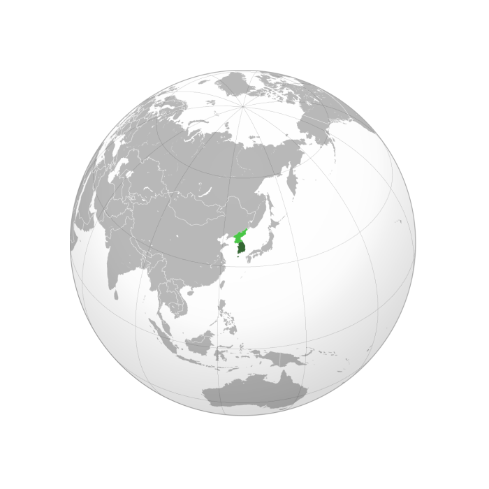
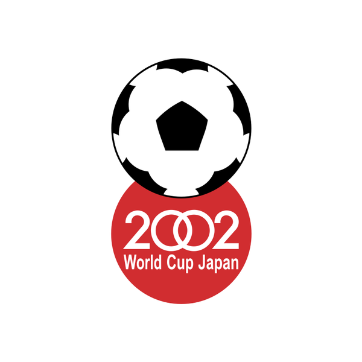

South Korea Flag
South Korea and Japan were selected as hosts by FIFA on 31 May 1996. The decision was made by the FIFA Executive Committee in Zürich, Switzerland, with South Korea and Japan beating Morocco, England and Mexico in the final vote. This was the first time that the World Cup would be hosted by more than one country, and the first time it would be held in Asia. The decision to award the tournament to South Korea and Japan was met with criticism from some quarters, with allegations of bribery and corruption being made against FIFA officials. However, both countries successfully hosted the tournament, which was widely regarded as a success.

South Korea Location
Initially, South Korea, Japan and Mexico presented three rival bids. South Korea's entry into the race was seen by some as a response to the bid of political and sporting rival Japan. FIFA leaders were split on whom to favor as host as politics within the world governing body held sway.
South Korea Bid Logo
With Mexico regarded as a long shot, the battle to host the tournament came down to South Korea and Japan. The two Asian rivals went on a massive and expensive PR blitz around the world, prompting Sultan Ahmad Shah, the head of the Asian Football Confederation, to step in.
Japan Flag
FIFA boss João Havelange had long backed the Japanese bid, but his rival in FIFA, UEFA chief Lennart Johansson, sought to undermine Havelange's plans. UEFA and the AFC viewed co-hosting between the two Asian rivals as the best option. South Korea and Japan were finally faced with a choice of having no World Cup or a shared World Cup and they reluctantly chose to go along with co-hosting. South Korea and Japan were chosen unanimously as co-hosts in preference to Mexico.
.svg (1).jpg)
Japan Location
This was the first World Cup to be hosted by more than one country, the second being the 2026 World Cup, which will be hosted by the United States, Mexico and Canada. This is also the first ever World Cup to be hosted in Asia, the other being the 2022 World Cup hosted by Qatar twenty years later and the first World Cup to be held outside of Europe and the Americas.

Japan Bid Logo
The general secretary of South Korea's bidding committee, Song Young-shik, stated that FIFA was interested in staging some matches in North Korea in order to aid Korean reunification, but it was ruled out. Though co-hosting the World Cup allowed Japan and South Korea to collaborate, the event did not significantly alter relations between the two countries, which have historically been strained. Even so, the World Cup promoted a global vision of cooperation between Japan and South Korea.